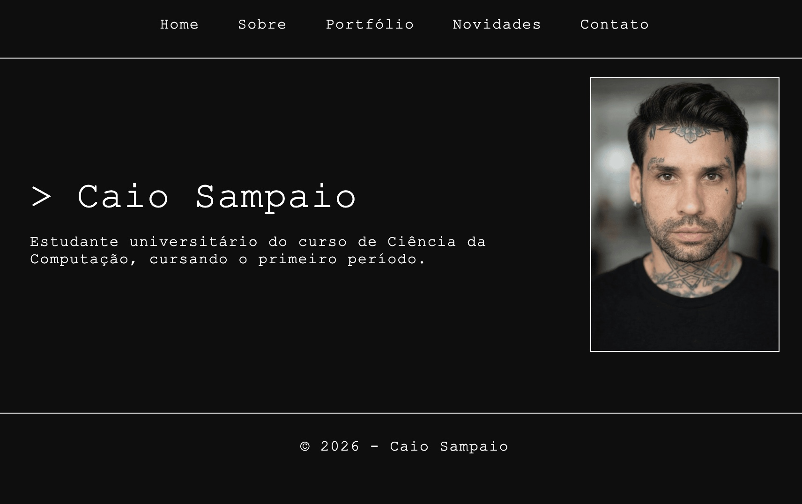

Meu Portfólio
Projetos
Website Pessoal

Criação de um site completo utilizando HTML e CSS, com páginas de apresentação, portfólio, contato e navegação estruturada.
Fundamentos de Rede Cisco
Estudo prático de redes de computadores, incluindo configuração de IP, testes de conectividade e compreensão de protocolos TCP/IP pela Cisco Networking Academy.
Ambientação Linux
Instalação e utilização de sistemas Linux para aprendizado de comandos, estrutura de arquivos e administração básica.